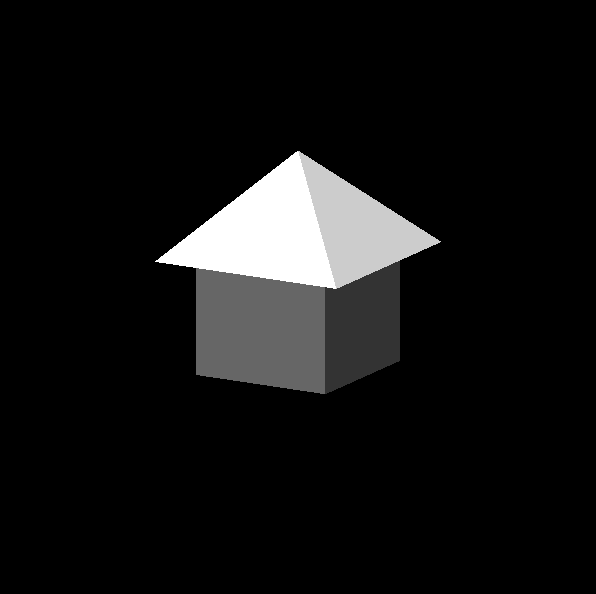
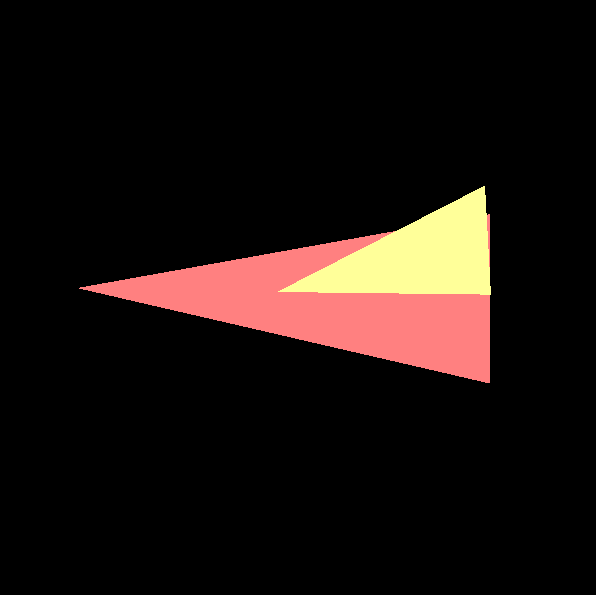
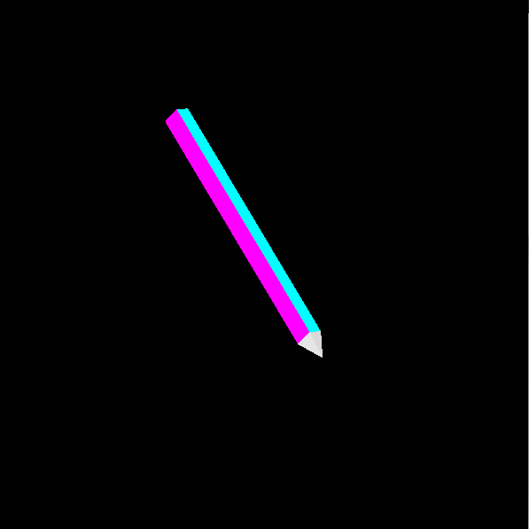

CS475/675 - Computer Graphics
Assignment 1
Modelling-Viewing Pipeline : Modelling
Autumn 2017-18
Features
- Modelling mode (activated by pressing ‘M’) and an inspection mode (activated by pressing ‘I’). Current active mode is displayed in the terminal.
- In the modelling mode, left clicking the mouse adds a point to the model and shift+left clicking the mouse removes the last added point. While modelling you can create polygons of any shape.
- Save the model: The saving mode can be activated by pressing the ‘K’ key and entering the filename on the terminal.
- Load a model from a “.raw” file: Load a ‘.raw’ file by pressing the ‘L’ key and entering the filename from the terminal.
- Rotation: The left/right arrows allows the model to be rotated about the Y-Axis, the up/down arrows about the X-axis and PgUp/PgDn about the Z-axis. The pivot for all these rotations is the centroid of the model. Pressing the ‘R’ key moves the origin to the centroid of the model.
- Translation: The W,S,A,D,Z,X key allows translation along +ve and -ve Y,X and Z axis respectively.
- The navigation keys are made available in the modelling mode as well.
- Pressing “1” , “2”, “3” keys let’s you choose different colours for the vertices that you draw.
- Pressing “T” key let’s you reset the rotation of the current model.
- Pressing “C” key let’s you clear the current model.
- Right mouse click let’s you remove the last added point to the model.
Models:

